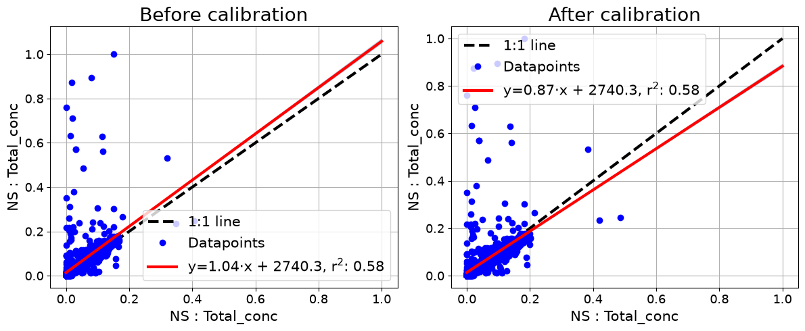

10b — Calibration¶
Theme: turning a measured disagreement into a correction, and applying it.
10a established that two NanoScans disagree by roughly 20%. This notebook fits that relationship as a calibration model and applies it, so one instrument is expressed on the other’s scale.
A calibration is only as good as the reference. Calibrating against another field instrument makes the two consistent; it does not make either correct.
[1]:
import aerosoltools as at
from aerosoltools.intercomparison import (
CalibrationModel,
apply_calibration,
fit_calibration,
)
target = at.load_ns_file("../../tests/data/Combine_example_NS.csv")
reference = at.load_ns_file("../../tests/data/Correlation_example_NS2.csv")
/opt/hostedtoolcache/Python/3.11.15/x64/lib/python3.11/site-packages/tqdm/auto.py:21: TqdmWarning: IProgress not found. Please update jupyter and ipywidgets. See https://ipywidgets.readthedocs.io/en/stable/user_install.html
from .autonotebook import tqdm as notebook_tqdm
Fitting a model¶
fit_calibration compares the target against the reference and returns a CalibrationModel. The time-alignment arguments are the same as in 10a.
[2]:
model = fit_calibration(
target, reference,
basis="total",
match="nearest",
tolerance="45s",
)
model
[2]:
CalibrationModel(basis='total', gains=[1.2011313767403207], offsets=[0.0], r_squared=[0.559382345973349], n_obs=[5120], applied=[True], include_offset=False, minimum_r_squared=0.5, clip_negative=True, target_instrument='NS', reference_instrument='NS', target_name='', reference_name='', target_unit='cm⁻³', reference_unit='cm⁻³', bin_mids=[], align={'match': 'nearest', 'tolerance': '45s', 'rebin_freq': None, 'rebin_method': 'mean', 'activity': None})
The model records what was fitted and how well.
[3]:
print("basis :", model.basis)
print("gain :", round(model.gains[0], 4))
print("offset :", model.offsets[0])
print("R squared :", round(model.r_squared[0], 4))
print("observations :", model.n_obs[0])
print("target unit :", model.target_unit)
print("reference unit :", model.reference_unit)
basis : total
gain : 1.2011
offset : 0.0
R squared : 0.5594
observations : 5120
target unit : cm⁻³
reference unit : cm⁻³
A gain of about 1.2 means the target reads roughly 20% low relative to the reference, so correcting it multiplies by 1.2.
Gain only, or gain and offset¶
By default the fit is proportional — gain only, no offset — because a particle counter reading zero in clean air should stay at zero. include_offset=True allows a constant shift when there is reason to expect one.
[4]:
with_offset = fit_calibration(
target, reference, basis="total",
include_offset=True, match="nearest", tolerance="45s",
)
print(f"gain only : gain {model.gains[0]:.4f}, "
f"offset {model.offsets[0]:.1f}, R2 {model.r_squared[0]:.4f}")
print(f"with offset : gain {with_offset.gains[0]:.4f}, "
f"offset {with_offset.offsets[0]:.1f}, R2 {with_offset.r_squared[0]:.4f}")
gain only : gain 1.2011, offset 0.0, R2 0.5594
with offset : gain 1.0448, offset 2740.3, R2 0.5786
Refusing a bad fit¶
minimum_r_squared guards against applying a calibration built on a relationship that is not there. Below the threshold the model is not marked as applied, and applied records that.
[5]:
strict = fit_calibration(
target, reference, basis="total",
minimum_r_squared=0.95,
match="nearest", tolerance="45s",
)
print(f"R squared {strict.r_squared[0]:.4f} vs threshold 0.95")
print("applied:", strict.applied)
R squared 0.5594 vs threshold 0.95
applied: [True]
Applying a model¶
apply_calibration is a method on the dataset. It returns a corrected copy by default; inplace=True modifies the object.
[6]:
calibrated = target.apply_calibration(model)
print(f"before: mean {target.total_concentration.mean():10.1f} {target.unit}")
print(f"after : mean {calibrated.total_concentration.mean():10.1f} {calibrated.unit}")
print(f"ratio : {calibrated.total_concentration.mean() / target.total_concentration.mean():.4f}")
before: mean 17782.3 cm⁻³
after : mean 21358.9 cm⁻³
ratio : 1.2011
The corrected instrument should now sit on the 1:1 line against the reference.
[7]:
import matplotlib.pyplot as plt
fig, axs = plt.subplots(ncols=2, figsize=(12, 5))
at.plot_correlation(target, reference, ax_in=axs[0],
match="nearest", tolerance="45s")
axs[0].set_title("Before calibration")
at.plot_correlation(calibrated, reference, ax_in=axs[1],
match="nearest", tolerance="45s")
axs[1].set_title("After calibration")
plt.tight_layout()

Fit and apply in one step¶
When you do not need the intermediate model, calibrate_against_reference does both and returns the corrected dataset together with the model it used.
[8]:
corrected, used_model = at.calibrate_against_reference(
target, reference,
basis="total",
match="nearest",
tolerance="45s",
)
print(f"gain applied: {used_model.gains[0]:.4f}")
print(f"mean {target.total_concentration.mean():.1f} -> "
f"{corrected.total_concentration.mean():.1f} {corrected.unit}")
gain applied: 1.2011
mean 17782.3 -> 21358.9 cm⁻³
Calibrating per size bin¶
basis="total" fits one gain for the whole instrument. Size-resolved instruments can instead be calibrated bin by bin, with basis="bins", which corrects a distribution whose shape is wrong rather than just its magnitude. Each bin then carries its own gain, and bin_mids records which diameter each belongs to.
Reusing a calibration¶
A CalibrationModel is a plain record of the fit, so it can be kept and applied to later measurements from the same instrument — the usual workflow when one side-by-side run calibrates a whole campaign.
[9]:
print("This model can be applied to any dataset from the same instrument:")
print(f" instrument : {model.target_instrument}")
print(f" gain : {model.gains[0]:.4f}")
print(f" fitted on : {model.n_obs[0]} paired observations")
print(f" alignment : {model.align}")
This model can be applied to any dataset from the same instrument:
instrument : NS
gain : 1.2011
fitted on : 5120 paired observations
alignment : {'match': 'nearest', 'tolerance': '45s', 'rebin_freq': None, 'rebin_method': 'mean', 'activity': None}
Next: the instrument-specific notebooks, starting with 11 — Simple instruments.